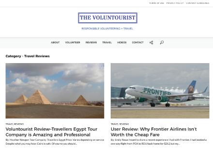

MY WORK / WWW.BEHARLE.COM
PORTAFOLIO: JOSÉFER BEHARLE
SECOND WIND CONSULTANTS
Second Wind Consultants is a Boston based company providing "struggling business owners with an alternative to bankruptcy, so they can eliminate debt and preserve their valuable assets".
Web Development Visual Design
THE VOLUNTOURIST

The Voluntourist mission is to educate, inspire and empower people to change the world through simple acts of kindness. From the most experienced Voluntourists to those looking for ways to start making a difference, our resources and knowledge will provide the necessary tools to create the most meaningful and ethical impact.
Web Development Visual Design
View Project